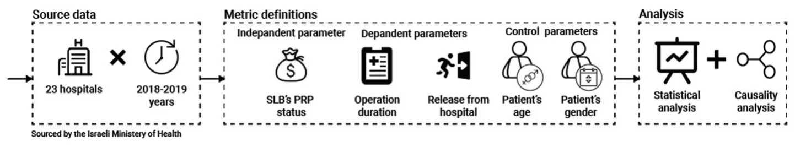
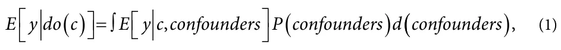
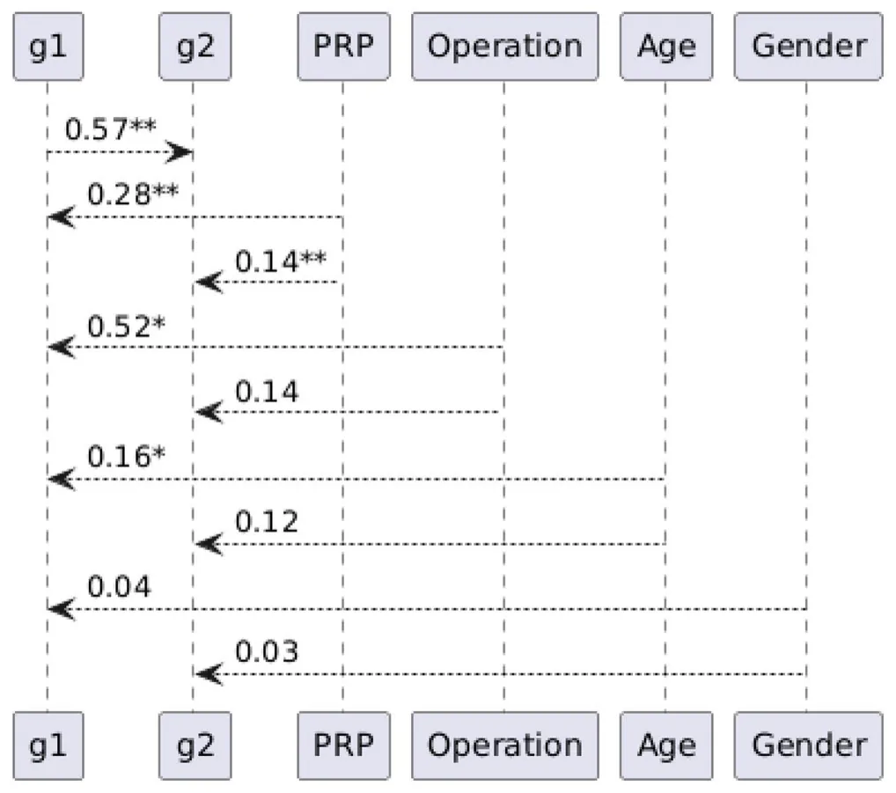

On this page
- Abstract
- Introduction
- Performance-related pay
- Street-level bureaucrats and performance-related pay
- Defining performance in the surgical context
- Methodology
- Data structure and metric definitions
- Statistical analysis
- Causality analysis
- Findings
- Discussion and conclusions
- Limitations
- Note
- Acknowledgments
- Notes on contributors
- Orcid
- Article notes
- References
Abstract
How does collective performance-related pay influence street-level bureaucrats’ job performance in public service settings? What is the magnitude of this effect? How do such incentive systems ultimately impact clients’ outcomes? To address these questions in a natural work environment, we analyze a dataset of 35,635 elective surgical procedures conducted in 23 public hospitals in Israel during the 2018–2019 fiscal years, where performance-related pay is implemented at the collective, hospital-level rather than the individual level. Overall, the findings support our hypothesis that collective performance-related pay improves SLBs’ performance. For client outcomes (LOS), the evidence is heterogeneous: the pooled nonparametric comparison shows no robust difference, while the causal model detects a small average signal, and hospital-level patterns vary—suggesting context-dependent effects. By drawing on large-scale administrative data from an actual policy implementation, this study extends prior research that has largely focused on individual-based incentives in experimental or highly stylized settings and contributes to the street-level bureaucracy and performance management literature by empirically distinguishing between effects on frontline performance and effects on client outcomes.
Introduction
Performance-related pay or pay-for-performance encompasses compensation systems where employees’ remuneration is partially or fully contingent on individual or organizational performance outcomes. Examples of such practices include merit-based pay, individual or team bonuses, profit-sharing arrangements, and stock-based incentives (Kong et al., 2023; S. Park & Conroy, 2022). This compensation mechanism represents a remuneration system that establishes a direct link between employees’ monetary rewards and their performance, measured as the outcomes of their work (Larkin et al., 2012). Organizations adopt performance-related pay as a tool for motivating the workforce. This practice has attracted a great deal of attention from both academic researchers and practitioners (Gerhart & Fang, 2014). Despite its prevalence, scholarly discourse over the past five decades has yielded conflicting perspectives regarding performance-related pay’s mechanisms and efficacy in enhancing or potentially diminishing employees’ job performance (Y. Chen et al., 2022).
As part of the New Public Management (NPM) reform movement, performance-related pay has emerged as a fundamental component of modern public bureaucracies (Ahmad et al., 2024; Frey et al., 2013). Since the late 1970s, many countries have implemented performance-related pay in their public institutions, either as an element of broader NPM and post-NPM (Reiter & Klenk, 2019) reforms or as a standalone innovation to enhance workforce effectiveness (Bellé, 2015; Lah & Perry, 2008). The prevalence of performance-related pay in the public sector has consistently expanded over four decades (Abner et al., 2017; Bellé & Cantarelli, 2015; Perry et al., 2009), with its adoption now extending beyond developed countries to various developing countries seeking to improve public-sector employee performance (Aoki & Rawat, 2020; Park, 2021).
Naturally, the rise of the NPM paradigm and performance-related pay practices in public bureaucracies has fundamentally transformed the working environment of street-level bureaucrats (SLBs) (Considine et al., 2015; Evans, 2016b; Lavee, 2021; Thomann et al., 2018; Zacka, 2017). This transformation reconceptualized citizens as clients and replaced traditional rule-based command structures with performance-based management systems emphasizing incentives and inducements (Brodkin, 2006; Gofen, 2014; Lotta et al., 2024). Under this new framework, SLBs operated within competitive quasi-markets where their performance was quantifiably measured and evaluated, with financial rewards and penalties directly linked to outcomes (Riccucci et al., 2004). This environment led SLBs to prioritize services yielding measurable outcomes at the expense of attention to less quantifiable interventions (Brodkin, 2011; Cohen et al., 2016; Raaphorst et al., 2018; Van Berkel & Knies, 2016).
The literature examining performance-related pay’s impact on organizational effectiveness focuses both on private sector enterprises (Wood et al., 2023) and public institutions (Ahmad et al., 2024). However, this literature has concentrated primarily on individual-based incentive systems (Gerhart & Fang, 2015). As a result, we know far less about how collective performance-related pay operates in team-based public service settings, particularly in street-level bureaucracies where work is inherently interdependent. Moreover, existing studies rarely examine whether gains in frontline performance under such incentive schemes translate into meaningful outcomes for clients. Similarly, empirical studies examining the relationship between SLBs’ financial incentives and their dual outcomes, namely performance and clients’ welfare, have focused primarily on individual-based compensation systems, leaving collective incentive arrangements relatively underexplored (Brodkin, 2011; Cohen & Gershgoren, 2016). While this body of research has generated important insights, our understanding of how collective incentive mechanisms, such as team-based bonuses or profit-sharing schemes, operate within street level bureaucracies remains limited (Cohen & Lazebnik, 2025). This gap is especially evident in empirically grounded theoretical accounts that draw on real-world implementation settings.
Moreover, previous studies that have investigated the impact of performance-related pay on employee outcomes suffer from several limitations. Most of these studies relied primarily on various research designs and tools including experiments (L. Chen & Yao, 2025). However, in many cases, experimental designs often reduce performance-related pay to binary conditions—the presence or absence of rewards. They also measure performance through narrowly defined task completion metrics that in most cases do not reflect reality. Moreover, such experiments ignore the organizational and national context, including the impact of the leadership, the culture, and organizational citizenship behaviors. In addition, workplace performance-related pay systems inherently involve risk and uncertainty, as compensation can both increase and decrease based on performance outcomes (Y. Chen et al., 2022). Furthermore, while existing studies examine the impact of performance-related pay on worker productivity, they largely overlook the consequential effects of altered worker behavior on citizens’ outcomes and quality of life.
Given these limitations, our study aims to contribute to the implementation literature by analyzing real-world data to address three critical questions: How does collective performance-related pay influence SLBs’ job performance in actual public service settings? What is the magnitude of this effect? And most importantly, how do these incentive systems ultimately impact citizen-client outcomes?
Our empirical effort is based on the medical domain, arguably one of the central services a government provides to its citizens (Straube, 2013; Vilhjalmsson, 2016). We use data about elective surgeries from the Israeli Ministry of Health. These operations occur in both performance-related pay and non-performance-related pay settings and are conducted by the same SLBs, allowing a relatively straightforward comparison between the two.
The article is structured as follows. Section two provides a comprehensive review of performance-related pay in the context of SLBs. We emphasize its significance given SLBs’ considerable discretion in policy implementation and their substantial influence on both policy outcomes and citizen-client outcomes. Section three presents the research context, followed by our methodological approach in section four. Section five details our empirical findings, concluding with a discussion of their theoretical and practical implications in section six.
Literature review: Street-level bureaucrats and performance-related pay
Performance-related pay
Throughout the twentieth century, scholarly discourse on organizational incentive systems, particularly within bureaucracies, evolved significantly. Early management theorists advocated for scientific rationality in organizational design and worker motivation. The classical approaches to management (Taylor, 1911) and bureaucracy (Weber, 1922/1946) were predicated on the belief that societal challenges demanded systematic, rational solutions. This perspective posited that optimal outcomes could be achieved through comprehensive information gathering, systematic evaluation of alternatives, and rational decision-making processes. According to this paradigm, organizational leaders were expected to function as purely rational actors (Gulick & Urwick, 1937) or “engineers” (Fayol, 1916/1949), approaching management through the lens of scientific objectivity (Dickinson, 2001). However, scholars soon recognized the importance of intrinsic motivation in shaping workers’ practices (Mayo, 1953; McGregor, 1960).
Nevertheless, compensation (Gerhart & Rynes, 2003), especially material incentives (N. Gupta & Shaw, 2014), remains the leading tool for managers and organizations seeking to enhance employee productivity (Gerhart & Fang, 2014). Building on the agency theory framework, scholars argue that incentives should align the efforts of agents with the objectives set by the principal. In this view, employee monitoring, targets, and incentives are considered “the essence of good management…” (Van Reenen, 2017, p. 10) and “the more a performer completes, the more each part is worth…” (Dickinson, 2001, p. 20). As widely recognized, the incentive effect suggests that if done properly (Pokorny, 2008), performance-related pay can increase employees’ work effort and overall performance (Chang, 2006; Rynes et al., 2005).
As a result, there has been extensive scholarly research on the impact of performance-related pay on various outcomes (Andelic et al., 2024; Artz & Heywood, 2024; V. Gupta et al., 2024; Zhang et al., 2022). Thus, discretionary employee benefits, which encompass a wide range of non-cash compensations provided by employers (Barringer & Milkovich, 1998), can be customized to align with an organization’s business strategies as well as its goals of attracting and retaining employees (Rynes & Barber, 1990; Werner & Balkin, 2021). Given that employees and potential hires often evaluate the total compensation and benefits package of a job as a whole, and that preferences for various combinations of these elements can vary (Eriksson & Kristensen, 2014; Milkovich & Newman, 2010), organizations worldwide strategically design their compensation and benefits offerings to attract, retain, and motivate specific employee groups. In many cases, performance-related pay has a positive effect on job performance in the workplace (Y. Chen et al., 2022).
Nevertheless, many scholars question whether and how this method influences employees’ job performance, with opinions remaining divided on whether it enhances or undermines it (Mendelson et al., 2017). Scholars from psychological perspectives, such as Deci and Ryan (1985), have challenged the incentive effects of performance-related pay. For instance, cognitive evaluation theory and self-determination theory argue that performance-related pay can undermine employees’ intrinsic motivation, thereby reducing their work effort. Individuals may develop either positive (i.e., driven to pursue challenging goals) or negative (i.e., coerced to meet mandatory objectives) perceptions of extrinsic rewards. These perceptions, when combined, can lead to either a net positive or negative impact on motivation (Deci & Ryan, 2000). Aside from questioning the effectiveness of this method, scholars also highlight several other drawbacks, including issues of inequality (Chi et al., 2019), stress (Parker et al., 2019), and negative impacts on health and well-being (Pfeffer et al., 2020) with greater risks found among women, minorities, and low-income workers (Davis & Hoyt, 2020), work-family balance (Masterson et al., 2021), and other adverse effects (Fulmer & Li, 2022). And yet, the use of performance-related pay in various organizations does not seem to be declining; on the contrary (Y. Chen et al., 2022).
While these studies offer valuable insights, it is important to note that interactions between clients and service providers differ significantly between private firms and the public sector. In this regard, we conceptualize the public sector as a distinct institutional context characterized by public funding, political accountability, and normative expectations regarding service provision and equity. Recent research emphasizes that public sector organizations are not only defined by ownership and governance structures, but also by the motivational environment in which financial incentives interact with pro-social values and public service norms (Ahmad et al., 2024; Lee, 2020). Public sector organizations are required to deal equitably in their practices and should be motivated by the desire to improve outcomes for the public. In public organizations, often viewed as monopolies in service provision, the effects of performance-related pay have important implications that remain underexplored.
Street-level bureaucrats and performance-related pay
Performance-related pay is a central component of NPM reforms (Frey et al., 2013). The Weberian model of public administration’s limitations became evident by the 1970s (Barzelay, 2001), spurring the emergence of NPM reforms in subsequent decades. This transformation, driven also by economic pressures, introduced private sector methodologies into public administration, emphasizing performance metrics and results-based incentives. Indeed, performance-related pay can be defined as a compensation scheme in which employees’ pay is based partially or wholly on their performance (Abner et al., 2017), under the assumption that workers’ compensation should be commensurate with their contributions (Pynes, 2008). When implementing such practices, scholars emphasize the importance of fairness, support, and transparency in decision-making (Belardinelli et al., 2023; Wenzel et al., 2019).
Despite significant scholarly critiques (Bae, 2023; Choi & Whitford, 2017), performance-related pay remains a common practice. As the phenomenon grows, more and more scholars point to the challenges it poses for the public sector: the structural differences between public and private organizations regarding budgets, accountability, transparency, and expectations about resource stewardship (Bellé, 2015; Perry et al., 2009); the collaborative nature of public sector tasks that complicates individual performance assessments (Burgess et al., 2017; J. Park, 2022); the limited effectiveness of financial incentives due to fundamental motivational differences between public and private sector employees (Perry & Hondeghem, 2008); and the inherent difficulty of developing adequate performance management systems given the multidimensional nature of public sector work (Ingraham, 1993; Perry et al., 2010). Indeed, Perry et al.’s (2009) seminal review suggests that performance-related pay can be effective in public sector organizations, but its success depends heavily on specific contextual factors. Nevertheless, despite these substantive concerns, performance-related pay continues to maintain its prominence in public administration practices and influence contemporary public sector management practices (Abner et al., 2017; Bellé & Cantarelli, 2015; Perry et al., 2009). The increasing incorporation of performance-related pay into public sector practices has spurred extensive research (Bellé, 2015; J. Park, 2022), highlighting the need for a systematic assessment of existing evidence to guide future research and policy.
This NPM transformation fundamentally altered the SLBs’ operating environment. The citizen-bureaucrat relationship was reframed through a market lens, with traditional command-and-control mechanisms giving way to incentive-based management approaches (Brodkin, 2006). While performance monitoring was not new—SLBs had long worked under supervision and output metrics (Lipsky, 2010; Prottas, 1979)—NPM intensified this focus (Lavee & Strier, 2019). Indeed, frontline supervisors affect the core perceptions that SLBs must take into consideration when using their discretion in implementing policy (Keulemans & Groeneveld, 2020). However, when citizens engage with bureaucrats, these interactions can sometimes lead to negative outcomes for the citizens (Barnes & Henly, 2018; Eckhard & Friedrich, 2024; Edri-Peer & Cohen, 2023). Operating in newly created quasi-markets, SLBs face direct financial consequences for assessments about their performance (Riccucci et al., 2004), leading them to prioritize services with readily quantifiable outcomes over those without (Van Berkel & Knies, 2016).
In response to these pressures, SLBs developed what Brodkin (2011) described as “informal practices that are substantively different from—and more diverse than—what policymakers or managers tend to recognize” (p. 253). Their focus shifted from client needs to organizational targets, with an emphasis on rapid processing over service quality. As Maynard- Moody and Musheno (2012) noted, “Street-level workers’ judgments, decisions, and actions invoke questions of social equity…” (p. S16). Even under NPM, some SLBs are willing to go to great lengths to help their clients if they believe that they merit that type of effort (Maynard-Moody & Musheno, 2003: 156–157). In some cases, they use their discretion to promote what they believe are normative values (Davidovitz, 2024; Raaphorst & Loyens, 2020). Sometimes, these SLBs will go so far as to risk their own lives for them (Cohen et al., 2024). On the other hand, SLBs are also under a great deal of pressure and have heavy workloads (Thomann et al., 2018). As a result, they must make quick decisions, some of which are unfair (Cárdenas & Ramírez de la Cruz, 2017; Zacka, 2017).
The combination of heightened performance demands and resource constraints prompted two main adaptive responses from SLBs. First, they adopted various “coping mechanisms” (Tummers et al., 2015), including selecting their clients judiciously (creaming), rationing the services they provide, and prioritizing quick-win cases over more complex ones (Considine et al., 2015; Soss et al., 2011). Second, when personal targets conflicted with the public interest, some SLBs resorted to client intimidation to achieve their goals (Cohen & Gershgoren, 2016). Thus, this shift resulted in a reorientation of priorities from addressing client needs to meeting organizational performance targets, as institutions increasingly emphasized “making the numbers” and prioritizing “speed over need” (Brodkin, 2011).
Indeed, SLBs have supervisors (Keulemans & Groeneveld, 2020) and direct managers (Davidovitz et al., 2023) who may control their discretionary practices. As Evans (2011) noted, Lipsky (2010) argued that superiors in street-level bureaucracies are “best placed to make decisions about legitimate and illegitimate discretion” (p. 371). However, the implementation literature overlooks the actual fragmentation of supervisory layers in street-level bureaucracies (Gassner & Gofen, 2018). In these organizations, most frontline supervisors are former SLBs who have been promoted to supervisory positions (Evans, 2013, 2016a). As a result, bureaucrats and their frontline superiors share common professional ground (Evans, 2011, 2016a). Nevertheless, less is known about what occurs when the direct manager is part of a collective team of SLBs that materially rewards performance. In such cases, supervision is assumed to be less effective, not only because of various cognitive biases (Gershgoren et al., 2025), but also because the entire team, including the team leader, shares the same material incentives.
Within this context, a growing body of literature has examined the effects of performance-related pay on street-level professionals. Empirical studies have demonstrated that financial incentives can influence the behavior, motivation, and performance of frontline public servants, including physicians and dentists, particularly when incentives are clearly linked to measurable outputs (Ahmad et al., 2024; Chalkley et al., 2010). Other studies highlight how performance contingent pay interacts with intrinsic public service motivation to shape individual-level outcomes such as job satisfaction and perceived control (Tu et al., 2024). Despite these advances, existing research has focused predominantly on individual-based incentive schemes and individual-level outcomes. As a result, we know considerably less about how collective performance-related pay operates in team-based public service settings where work is inherently interdependent, and about whether improvements in street-level performance under such schemes translate into meaningful outcomes for clients. This gap is particularly pronounced in studies drawing on real-world administrative data and examining both organizational performance and client outcomes simultaneously.
Moreover, while evidence suggests that performance-related pay-style incentives may produce adverse client outcomes, the precise causal mechanisms linking incentives, behavior, and outcomes remain understudied. Significant knowledge gaps persist, particularly regarding collective incentive mechanisms such as team-based rewards and profit-sharing in street-level bureaucracies. There is a notable absence of empirically grounded theoretical frameworks derived from implementation evidence. Furthermore, while existing studies concentrate on worker productivity, they rarely use “real world” empirical evidence to examine how altered worker behavior affects citizens’ outcomes. Thus, we posit two hypotheses:
H1: Collective performance-related pay for SLBs will improve their performance.
H2: Collective performance-related pay for SLBs will negatively affect their clients’ outcomes regarding the policy involved.
Defining performance in the surgical context
Healthcare systems present unique challenges for comparative measurement due to the highly individualized nature of patient care, which is influenced by a complex interplay of clinical, sociological, legal, technological, and logistical factors (Hanefeld et al., 2017). However, within the specific domain of Operating Rooms (OR) and surgical activity, performance assessment is typically standardized through two primary categories: efficiency-focused metrics (e.g., surgical duration and schedule adherence) and quality-focused outcomes (e.g., post-operative morbidity and mortality) (Schouten et al., 2023).
Previous work indicates that efficiency-focused metrics, such as Length of Stay (LOS), can serve as effective proxies for patient outcomes, predicated on the link between prolonged hospitalization and increased recovery complexity (Healy et al., 2024). However, while existing literature has explored the effects of incentives on surgical activity, there remains a lack of consensus regarding the definition of performance outcomes in these studies (Eijkenaar, 2013). Furthermore, there is a paucity of research utilizing ‘self-matching’ methodologies, particularly across multiple institutions and surgery types employing similar incentive schemes (Kirksey et al., 2022).
The context: SLBs in Israeli operation rooms
Israel operates a hybrid healthcare system that combines public and private elements. Funding comes from multiple streams: government allocations, private insurance contributions, and out-of-pocket payments from patients. Healthcare services are provided through a diverse network of facilities run by different entities, including government agencies, municipalities, private companies, and nonprofit organizations. All Israeli residents contribute to healthcare through a mandatory health tax, which the government then allocates to four competing health maintenance organizations (HMOs). These HMOs are responsible for providing universal healthcare coverage to citizens. The Ministry of Health acts as the primary regulatory body, establishing healthcare policies and standards, while also directly operating state hospitals and mental health facilities (Cohen & Filc, 2017). Classified as a high-income member of the OECD with an average life expectancy of 81.9 (World Health Organization, 2025), Israel maintains a universal healthcare system that encompasses comprehensive surgical care. Israel’s healthcare framework is governed by governmental regulations, which oversee the competition among providers and regulate service offerings (Vigoda-Gadot et al., 2023). This oversight also includes control over the allocation of hospital beds and ORs in public and private facilities (Rosen et al., 2015).
Nonetheless, as in other high-income OECD countries, extended waiting times for surgical procedures persist as a significant challenge (Martin et al., 2020). Approximately 77% of the population subscribes to supplementary voluntary health services offered by their nonprofit health maintenance organizations. In addition, approximately 40% of the population possesses additional fully private health insurance, with surgical care being one of the most frequently utilized components (Israel Competition Authority, 2021). These supplementary and private coverages enable access to surgeries outside the main purview of public hospital activities, reducing the wait time for these procedures for part of the population. Alongside the popularity of voluntary private coverages, public hospitals continue to serve as the primary providers of surgical services in Israel, with 23 major public hospitals (all included in this study) accounting for approximately 77% of the nation’s ORs (Israeli Ministry of Health, 2020).
The study context is particularly well-suited for examining the effects of collective performance-related pay in street-level bureaucracies. Public hospitals constitute a highly institutionalized public service setting in which frontline professionals operate under standardized employment conditions, clearly defined service mandates, and centralized performance monitoring. At the same time, service delivery in hospitals is inherently team-based, relying on coordinated action among physicians, nurses, and administrative staff, making collective incentive schemes especially salient. Moreover, the use of administrative performance data and objective client outcome measures reduces concerns associated with self-reported performance and attitudinal bias. This combination of institutional uniformity, interdependent work processes, and high-quality administrative data allows for a more precise examination of how collective incentives shape frontline performance and client outcomes in real-world public service organizations.
Public hospitals in Israel operate as nonprofit entities, either under direct government ownership or managed by non-governmental organizations. These institutions offer a relatively uniform environment for research. The Ministry of Health (MOH) enforces standardized pricing and billing frameworks for surgical procedures, including a fixed procedure-related group tariff (Brammli-Greenberg et al., 2016). Additionally, the MOH sets mandatory procurement thresholds between HMOs and hospitals and imposes penalties to curb excessive growth in billable medical activities.
Israeli public hospitals exhibit characteristics that are both similar to and distinct from other healthcare systems. Most institutions have capacities exceeding 300 beds, and uniform management structures are employed. All facilities operate 24/7 emergency departments and conduct 24/7 emergency surgeries. Staffing levels are dictated by national quotas, and consistent staffing practices such as the non-utilization of nurse anesthetists are maintained. All hospitals are affiliated with medical schools, facilitating clinical rotations and internship programs. The majority are situated within Israel’s four major metropolitan regions. Furthermore, working practices are often similar. For example, the administration of anesthesia to surgical patients routinely occurs within the operating room itself, contrasting with the preoperative induction practices observed in some U.S. facilities. Infrastructure specifications, including the operating room’s size and design, are also standardized under MOH regulations.
Regardless of ownership, all public hospitals must comply with employment procedures and standards articulated in collective agreements negotiated between the Israeli government and sectoral labor unions. The collective agreements stipulate rank-adjusted hourly wages as the predominant payment mechanism and predefined shift start and end times for each professional category. Performance-related pay mechanisms are generally absent from these collective agreements for hospital staff. To enhance occupational flexibility beyond standard public sector shifts, which typically conclude at 3:00 pm on weekdays, hospitals, with governmental approval and regulation, have developed supplementary employment frameworks (Israeli Medical Association, 2025).
Government-owned hospitals have established semi-autonomous legal entities referred to as hospital corporations (Taagid). These entities employ hospital staff under distinct contracts and remuneration structures immediately following their public shifts. This model increases the utilization of the surgical infrastructure for elective procedures and adds to the supply of possible surgeries, with the goal of improving the public’s wellbeing. Hospital corporations are generally overseen by members of the hospital’s management and not bill the parent hospital for the use of its facilities. Profits generated by these corporations are often reinvested into the hospital. Non-governmental public hospitals implement analogous practices, albeit not always through a separate legal entity.
Performance-related pay mechanisms are frequently used in these additional employment frameworks. For operating room personnel, these practices can significantly impact their overall compensation, contributing up to 50% of the total income of these SLBs. Of the operating room teams, which includes surgeons, anesthesiologists, nurses, cleaning staff, engineers, and imaging specialists, surgeons and anesthesiologists often receive session-based payments (State Comptroller, 2009). Services rendered under these mechanisms are popularly referred to as “sessions,” as they generate income on a sessional basis. The Ministries of Health and Finance regulate these sessions to ensure that performance-related pay activities are confined to post-public workday hours, commencing no earlier than 3:00 pm. Surgeons in Israel are classical type of SLBs, as they engage directly with citizens, meeting patients before, during, and after surgical procedures, while exercising professional discretion in the implementation of public healthcare policy.
The surgical setting exemplifies the core tensions of street-level work, characterized by high levels of professional discretion where clinical decisions carry significant weight for individual citizens. In this context, SLBs must navigate the pressures of a universal health system, where public expectations of equity and equal access often collide with the resource constraints and efficiency demands of performance-related pay.
In parallel with the SLBs teams that conduct elective “session” activities during the afternoon, an additional team is always present to perform emergency duties as part of their shifts under the collective agreement. Therefore, a complete separation is maintained between the elective surgeries and emergency activities and providers. Hospitals or their corporations retain the authority to determine the number of surgeries performed during the sessions, the identity of the surgeons and other personnel assigned to these surgeries, and the allocation of patients to morning (public) or afternoon (session) surgical slots. While the overarching framework of PRP sessions is consistent across hospitals (confirmed via personal communications with Ministry of Health officials), the specific internal mechanisms regarding personnel selection and compensation distribution exhibit significant heterogeneity. For instance, field observations indicate that some institutions restrict PRP participation to senior anesthesia providers, whereas others extend this opportunity to residents. Furthermore, the precise financial compensation per session is neither centrally regulated nor publicly standardized.
However, the central operative functions are directly incentivized by performance. We conceptualize the collective nature of this PRP not merely as a shared bonus, but as a mechanism for enforcing efficiency norms across the entire theater. Because the core clinical team is financially motivated to maximize throughput, they effectively exert monitoring and hierarchical pressure on peripheral, possibly non-PRP support staff (such as cleaning and other assisting personnel). Thus, the behavioral effect extends beyond the direct beneficiaries; the incentivized ‘core’ drives the operational tempo for the entire room, ensuring that even non-incentivized tasks are executed with heightened urgency to prevent bottlenecks. Thus, the behavioral effect extends beyond the direct beneficiaries; the incentivized ‘core’ drives the operational tempo for the entire room, ensuring that even non-incentivized tasks are executed with heightened urgency to prevent bottlenecks.
These incentives have created an environment wherein SLBs can optimize their compensation by increasing their surgical throughput during the sessions. Compared to the fixed-income model governing the public shifts in the morning, SLBs may seek to expedite operation times or reduce patient turnover time within the same operating room. Thus, similar cases conducted based on the collective agreement by similar SLB teams might vary in their procedural efficiency.
Methodology
Our research aims to advance the literature on policy implementation by examining real-world evidence to address three fundamental questions: What effect does collective performance-related pay have on SLBs’ work performance in actual public service environments? How significant is this impact? And most crucially, how do these financial incentives ultimately affect the outcomes of the people who use these services? To achieve our goals, we used a dataset comprised of 766,619 surgical procedures in 23 public hospitals in Israel during the 2018–2019 fiscal years. The data, reported by the hospitals to the MOH through the “Katzat” (“Shorter waiting times”) initiative (Israeli Ministry of Health, 2023), encompasses continuous operational metrics (24/7/365) including temporal markers, procedural classifications (e.g., ICD-9), facility identifiers, and patient flow indicators. Hospitals were financially incentivized to report data as part of the “Katzat” initiative. Failure to report procedures resulted in less government funding, prompting the hospital to provide complete results. We explicitly excluded the 2020 data to avoid potentially confounding effects from the COVID-19 pandemic on operational and financial metrics.
Access to the dataset was facilitated through the TIMNA healthcare analytics platform following authorization from the MOH’s Big Data Committee. The retrospective nature of our analysis and preexisting anonymization protocols implemented by the MOH qualified our study for exemption from additional ethical review, in accordance with the MOH’s established framework for big data research initiatives.
Institutional survey data from two other sources complement our primary dataset: (1) the Report of the Committee for Establishing a Work Strategy in ORs, and (2) a specialized operating room management survey administered by the MOH’s budgeting department. Both sources provide granular temporal data delineating shift parameters across participating institutions. All supplementary data correspond with the 2018–2019 period, maintaining temporal alignment with our primary dataset. We conducted all of our analyses using the Python programming language, version 3.12 (Oliphant, 2007) and operated on the MOH’s secure research environment computing infrastructure.
In order to control for operations that are planned, rather than emergency operations that fall outside the performance-related pay and non-performance-related pay settings, we chose the 12 most common surgeries that are performed solely on a planned, rather than emergency, basis and had at least 1,000 cases in our dataset: Cataract extraction with IOL - phacoemulsification, phaco, or ECCE, local excision of skin lesions and subcutaneous fat, total knee replacement, tonsillectomy with adenoidectomy, insertion of lens at cataract extraction, local excision of lesion of breast (lumpectomy), cyst removal, cataract phacoemulsification and aspiration, peripheral nerve or ganglion decompression, transurethral excision/destruction of lesions or tissue of the bladder, release of carpal tunnel, phaco + IOL, transurethral prostatectomy, and myringotomy with insertion of a tube. Surgeries that are conducted in an emergency setting or that are done in both elective and emergency manners, such as C-sections, coronary catheterizations, or appendectomies, were dropped from the analysis.
Using this data, we explored the two hypotheses of this study in a four-step analysis. First, we conducted a statistical analysis to test H1. Second, we performed a causal analysis in order to establish a causal-oriented explanation of the relationship between the collected data and performance-related pay or non-performance-related pay as a factor in the SLBs’ performance. The third and fourth steps repeated the first and second steps, respectively, for H2.
Figure 1 shows a schematic view of the study’s design, including the source of the data, the definitions of the metrics, and the analysis.

Data structure and metric definitions
Our dataset contained eight main features: the hospital where the operation took place, the type of operation (represented by its ICD-9 code), the patient’s age, the patient’s gender, the starting time of the operation, the duration of the operation (i.e. the time between the patient’s entry into the operating room and the time the patient left the room), the length of time between the end of the operation and the patient’s release from the post-operation recovery room, and the length of time between the end of the operation and the patient’s release from the hospital.
In accordance with the hospitals’ self-reported practices and aligned with the MOH, performance-related pay is provided for all operations with a starting time of 3:00 pm or later. Those conducted before 3:00 pm are associated with non-performance-related pay. Furthermore, the duration of the operation is used as the metric to measure the SLBs’ performance. While there is a typical amount of time associated with each type of operation, and there are multiple factors that can affect the amount of time required for it (Martinez et al., 2021; Stepaniak et al., 2010), the overall objective of clinicians is to perform operations as quickly as possible, while maintaining an optimal clinical outcome (Maruthappu et al., 2015).
Lastly, the patients’ outcomes are measured using the length of time between the end of the operation and their release from the hospital. In the context of ORs, given the data available, this method is probably the closest and most valid way of measuring their outcomes. For simplicity, we denoted these two goals as g1 and g2, respectively. Thus, the smaller the values of g and , the better the patients’ outcomes. g 1 2
Statistical analysis
To conduct the statistical analysis, we divided the data into two groups - performance-related pay and non-performance-related pay operations for each of the hospitals in the cohort. Initially, we ignored the division of the operations by hospital and conducted a Mann-Whitney U-test (McKnight & Najab, 2010). Next, considering each hospital independently, we used a pair-wise Kruskal–Wallis H test with Bernoulli post-hoc. We set the statistical significance to be p < .01.
Causality analysis
We studied the causal relationship between the performance-related pay status and the two clinical outcomes (g g , ). To this end, we utilized the 1 2 DoWhy1 framework for causal inference (Sharma & Kiciman, 2020), which provides a structured approach to causal analysis. The performance-related pay status represents the funding source, and the outcome variables (g g , 1 2 ) represent the clinical outcome under investigation. Potential confounders, including the patient’s age and gender, and the hospital where the operation occurred, were identified based on domain knowledge. First, a directed acyclic graph was constructed to represent the causal relationships between the treatment, outcome, and confounders (Vardi & Lazebnik, 2023). The graphs included all of the features in the data. Using backdoor adjustment criteria (Gultchin et al., 2020), we identified the causal effect of performance-related pay on (g g , ). The estimand was defined as: 1 2

where the do c( ) operator indicates a causal intervention in which the treatment is manipulated directly, breaking any natural dependencies it might have with other variables. The causal effect was estimated using a linear regression (Su et al., 2012) to adjust for the confounders. This method ensures unbiased estimates under the assumption of no unmeasured confounding. Finally, we conducted two refutations to validate the causal effect. First, we simulated an unobserved confounder to test the sensitivity of the results. Second, we assigned random treatment values to confirm that the observed effect was not due to simple chance.
Findings
Our cohort contained 35,635 operations overall. Of these, 57.67% of the operations were performed on female patients, while the remaining 42.33% of operations were performed on male patients. The patients’ ages ranged from four years old to 91 years old with a mean ± standard deviation of 68.45 ± 17.75 years. Of these operations, 12.78% were conducted under the PRP condition, while the other 87.22% were conducted under the non-PRP condition.
We initially explored the impact of performance-related pay on SLBs’ performance and client outcomes by examining the distributions of key metrics under both pay conditions. As illustrated in Figure 2, the distributions of operation duration and patient hospitalization duration reveal distinct patterns between the performance-related pay and non-performance-related pay groups. Based on the resulting histograms, we conducted a Shapiro-Wilk test to check if the distributions were normal or not. We found that the length of the operation was normally distributed with a mean ± standard deviation of 64.5 ± 38.6 and 40.2 ± 27.3 min for the non-performance-related pay and performance-related pay conditions, respectively. While not normally distributed, the length of the patients’
stay for the non-PRP and PRP conditions were 780.8 ± 1,636.6 and 770.2 ± 1,748.2 min, respectively. Substantively, this implies that PRP operations are 24.3 min shorter than non-PRP operations (64.5–40.2), which is about a 37.7% reduction relative to the non-PRP mean. In standardized terms, this difference corresponds to roughly 0.73 pooled standard deviations (Cohen’s d), indicating a medium-to-large effect.
Due to the relatively large sample size and to reduce differences in case mix between PRP and non-PRP procedures, we constructed a matched sample. Namely, we performed one to one matching in which each PRP operation was matched to one non-PRP operation without replacement, using exact matching on (i) type of operation (ICD-9 code) and (ii) patient gender, and matching on patient age (in years) using nearest-neighbor matching within a maximum allowed age difference of five years (i.e., an age caliper of ±2.5 years). PRP cases without an eligible non-PRP match within these constraints were excluded. This procedure yielded 9,112 operations (i.e., 4,556 matched pairs) for further analysis. We assessed covariate balance on age before and after matching by comparing age distributions and reporting, confirming improved balance after matching (Levi et al., 2024). Doing so allowed us to control for these parameters, leaving us with 9,112 operations for further analysis. In the matched sample, operation duration was approximately normally distributed based on Shapiro– Wilk test, so we compared mean operation duration between PRP and non-PRP using a two-sample student t-test. In contrast, length of stay remained right-skewed after matching; therefore, we compared groups using the Mann–Whitney U test. To avoid confusion about directionality, we report results consistently as PRP procedures having shorter (lower mean) operation duration than non-PRP procedures.
Here, using the student T-test (we used the T-test rather than the U-test because the distribution was normal), we determined that the results for the performance-related pay and non-performance-related pay conditions were statistically significantly different with p < .01 and the performance-related pay has a higher mean value. Unlike the result we obtained using the Mann-Whitney U-test, the length of the hospitalization had no statistically significant difference with p = .173.

We then moved to the causal analysis. Figure 3 shows the directed acyclic graph representing the causal relationships between the performance-related pay condition, the SLB’s performance (g1), and the patient’s outcome (g2), with adjustments for key clinical features such as the type of operation and the patient’s age and gender. Arrow labels in the figure report standardized coefficients (β) from the linear models used in the DoWhy backdoor-adjusted estimation, with larger absolute values indicating stronger associations.
Because variables are on different scales, magnitudes should be interpreted cautiously; statistical significance is denoted by *p < .05 and **p < .01.
As the figure indicates, performance-related pay had a strong effect on both the SLB’s performance and the patient’s outcome, with a stronger influence on the SLB’s performance (g1). The clinical features—type of operation, and the patient’s age and gender—also played a role in shaping the outcomes, although their impact was comparatively smaller. The figure highlights that performance-related pay was a critical determinant in influencing both clinical outcomes, while the patient’s characteristics and the specific nature of the operation further contributed to these variations. Statistical significance is indicated by asterisks, emphasizing the importance of these relationships in the model.
Notably, when repeating both the correlation and$ causal analysis using the specific hospital, the results were similar. Nonetheless, in 6 out of the 23 hospitals, we found a statistically significant positive correlation between performance-related pay and patients’ outcomes (g2). In contrast, in eight of the hospitals, there was a statistically significant negative correlation. In the remaining seven hospitals, there was no statistically significant correlation. This between-hospital heterogeneity may reflect differences in local implementation and constraints. For example, PRP regimes may vary in how strongly they emphasize throughput versus quality safeguards; hospitals may differ in staffing mix and team stability during afternoon sessions; and downstream capacity (e.g., recovery rooms, ward bed availability, discharge processes) may shape whether faster surgery translates into shorter hospitalization. These mechanisms cannot be tested directly with the current data, but they suggest that PRP effects on patient outcomes likely depend on organizational context and resource conditions.
Thus, the findings seem to support H1. We see both correlation and causation connections between performance-related pay and the SLB’s performance. Taken jointly, evidence for H2 is mixed and context-dependent. In the matched sample, the pooled LOS comparison is not statistically distinguishable (Mann–Whitney p = .173). In the causal model, PRP exhibits a statistically detectable but substantively small average effect. However, hospital-level associations vary in sign and significance, indicating that any PRP–outcome relationship is not uniform across organizations.
Discussion and conclusions
This article pursued two main objectives: to examine how collective performance-related pay affects SLBs’ job performance and to assess the ultimate impact of these incentive systems on their clients’ outcomes. We analyzed real-world data measuring both SLB performance in authentic public service settings and the resulting effects on their citizen-clients. While extensive research has investigated performance-related pay and its influence in private companies (Kong et al., 2023; S. Park & Conroy, 2022) and public organizations (Ahmad et al., 2024; Aoki & Rawat, 2020; Frey et al., 2013; Park, 2021), our study contributes new insights into these relationships.
This study makes three contributions to the literature on performance-related pay and street-level bureaucracy. First, by focusing on collective performance-related pay, it extends existing research that has predominantly examined individual-based incentive schemes, demonstrating that collective incentives can shape frontline performance in team-based public service settings. Second, the findings highlight an important distinction between improvements in street-level bureaucrats’ performance and downstream effects on client outcomes. While collective incentives are associated with higher levels of measured performance, their implications for client well-being are less straightforward, suggesting that performance gains do not automatically translate into improved client outcomes. Third, by drawing on large-scale administrative data from a real-world public service context, the study provides empirical evidence that complements prior experimental and survey-based research, offering a more nuanced understanding of how incentive systems operate under institutional constraints typical of public sector organizations.
For policymakers, these findings underscore that performance pay reforms should not be evaluated solely in terms of efficiency gains. Designing collective incentive schemes requires explicit attention to equity and service quality, as well as ongoing monitoring of how incentives affect both frontline practices and client outcomes over time._
While scholars have examined how NPM practices transformed SLBs’ working environment (Brodkin, 2006; Considine et al., 2015; Evans, 2016b; Gofen, 2014; Lavee, 2021; Lotta et al., 2024; Masood & Nisar, 2022; Thomann et al., 2018), there appears to be limited research using real-world data analyzing how performance-related pay affects both SLBs’ practices and their direct impact on citizens’ outcomes. Furthermore, the existing literature exploring NPM’s influence on SLBs’ behavior and the effects of material incentives provided to them has primarily focused on individual-based incentive systems. Empirical studies examining the relationship between SLBs’ financial incentives and their two goals of improving their performance and their clients’ outcomes have largely concentrated on individual-based compensation systems, with collective incentive approaches remaining understudied (Brodkin, 2011; Cohen & Gershgoren, 2016). Furthermore, previous studies examining the relationship between performance-related pay and employee outcomes have faced significant limitations regarding their ecological validity and the challenge of generalizing findings from laboratory experiments to real-world environments. Given these limitations, our study aims to contribute to the implementation literature by analyzing real-world data to address our research questions.
Overall, the findings support H1, establishing performance-related pay’s impact on SLBs’ performance. H2 yields heterogeneous evidence for patient outcomes: while the pooled causal model detects a small average effect, hospital-level associations vary in sign and significance, suggesting that PRP’s downstream impact is context-dependent rather than uniform. Importantly, the mixed hospital-level associations for patient outcomes indicate that PRP is unlikely to have a uniform impact across street-level organizations. This pattern aligns with the view that performance regimes interact with local managerial priorities, operational slack, and coordination capacity, producing benefits in some settings but unintended consequences in others. Future research should examine which organizational conditions (e.g., staffing continuity, monitoring practices, post-operative capacity) moderate whether PRP-driven efficiency gains translate into improved client outcomes. Nevertheless, these findings shed light on the critical role of SLBs’ discretion in policy outcomes and the importance of performance-related pay, a leading component of NPM, as a key factor that shapes their practices. While traditional public administration values persist in government organizations, including law enforcement (Møller et al., 2022; van der Steen et al., 2018), researchers emphasize that NPM’s focus on performance management has shifted the emphasis away from rule-based systems toward incentive-driven approaches (Brodkin, 2006). Modern public administration now treats SLBs as if they were operating in competitive markets, rewarding high performers financially, while penalizing those who underperform (Van Berkel & Knies, 2016). This emphasis on external rewards risks undermining other forms of motivation and may lead SLBs to view the citizens they serve more as statistical cases than as people. However, as our findings suggest, while NPM and material incentives may appear to harm equity (Lavee, 2022) and increase inequality (Eiró & Lotta, 2024) in the short term, we cannot be certain whether such incentive mechanisms will ultimately lead to better outcomes even for privileged or financially secure clients in the long term. One practical insight is that we should be more skeptical of performance-related pay’s presumed ability to automatically improve the public’s outcomes in the ways that both the public and policymakers might intuitively expect.
Limitations
This brings us to the limitations of our study and future research. Notwithstanding its contributions, our study has a major limitation inherent both in our chosen methodology and our specific context. First, while the dataset encompasses a large number of surgical procedures from 23 public hospitals, it is limited to the 2018–2019 fiscal years, potentially reducing the generalizability of our findings to other periods or healthcare systems. A second set of limitations stems from the way hospitals operate. While the exclusion of emergency surgeries and operations with ambiguous performance-related pay classifications ensured a more accurate comparison, other factors such as “education-heavy” operations in which medical students or young interns participate, mostly during the mornings, might have influenced the data. Their presence might have led to significant variations in the SLBs’ performance and the patients’ outcomes.
A critical limitation concerns the potential for selection bias—specifically a ‘creaming’ effect—wherein surgeons might preferentially select fewer complex cases for Performance-Related Pay (PRP) sessions. While we attempted to mitigate this by controlling for demographic factors such as age and gender, we acknowledge that unmeasured clinical variables could influence the results. However, the analysis of Length of Stay (LOS) provides evidence against a systematic selection bias. Theoretically, if ‘easier’ cases were disproportionately assigned to the PRP group, these patients would exhibit superior recovery trajectories and fewer complications, resulting in significantly shorter hospitalizations. The fact that our results showed no consistent reduction in LOS for the PRP group implies that unmeasured patient complexity was likely comparable between the groups, rather than skewed by a constitutional ‘creaming’ mechanism.
Another issue was our inability to fully control for the identity of each member of the operating team. More experienced and efficient teams might be selected more often to perform performance-related pay operations. Similarly, we could not control for the fact that the exact performance-related pay mechanism that each hospital used in each shift might vary. Clearly, surgeons and anesthesiologists are more likely to be compensated with performance-related pay than other operating room staff members such as cleaners. However, the similar effects size across all participating hospitals answered this concern.
A primary limitation of this study is the inherent difficulty in benchmarking our results against prior work, as there is currently no universally accepted “gold standard” for surgical team performance. Furthermore, the metrics utilized (surgical duration and LOS) are subject to a multitude of confounding variables unique to the surgical domain. This high degree of specificity may limit the generalizability of our findings to broader service operations contexts (Healy et al., 2024). In addition, in the causal analysis, the use of the DoWhy framework and backdoor adjustment criteria assumed no unmeasured confounders, a challenging assumption to validate fully. While we conducted sensitivity analyses and refutation tests, the possibility of residual confounding cannot be entirely ruled out. Finally, we used the length of the operation to assess the SLBs’ performance, assuming that shorter operations are desirable. While generally true, this assumption does not necessarily hold under all circumstances. For example, in Israel the length of the operation does not affect the billing. Therefore, shortening the length of the operation could lead to poorer outcomes for the patients. In contrast, in the United States, the length of the operation does affect the final bill for it. Therefore, the assumption that shorter times for operations is better might be more appropriate for the American situation. Future research should address these limitations by incorporating more comprehensive datasets spanning multiple years and healthcare systems to validate the findings across diverse contexts. In addition, prospective studies, including real-time data collection and qualitative assessments, could enhance the understanding of performance-related pay dynamics and their effects on SLBs’ collective and individual performance and their clients’ outcomes.
As hinted at above, the primary limitation stems from our focus on the Israeli context. As this study examines a single country with its unique characteristics of time and location, we cannot state that the behaviors we observed in Israel are representative of other contexts. Hence, the results should be interpreted with caution. In addition, we primarily examined how collective financial incentives affect SLBs’ behavior. While our empirical findings suggest that these incentives played a major role in our case study, research has shown that other factors significantly influence workers’ motivations and behavior, with social factors sometimes taking precedence (Bruce & Nyland, 2011). Future research should systematically investigate the role of social incentives in SLBs’ individual and collective work to provide a more comprehensive understanding of what drives their performance. In this regard, distributive justice is also a significant factor (Exline et al. 2003).
Furthermore, even if our findings hold within the context of Israel, we should be careful about generalizing them to other SLBs’ professional settings even within Israel. Our study examines a specific time period, location, and organizational context, so we cannot assume that these mechanisms apply uniformly across all street-level bureaucracies (Evans, 2020). For example, police officers work in highly structured, quasi-military organizations and regularly face dangerous situations, creating a fundamentally different work environment from our case study. Our findings pave the way for future studies that seek to broaden both the theoretical and empirical understanding of SLBs’ practices, performance—and its long-term outcomes for society—using performance-related pay mechanism.
Last, we must revisit Lipsky’s (2010) crucial insight, which remains relevant today: the scope of state intervention is not determined by SLBs or their individual compassion. While the public may view doctors and nurses as gatekeepers of public welfare due to their influence, these officials ultimately adapt their behavior to the incentive structures and rules established by politicians and senior administrators. As public organizations embrace performance metrics and competition, policymakers must remember that effective public administration requires balancing performance demands with fundamental values of justice, equity, equality, and responsibility.
Note
-
- The DoWhy causal framework is an open-source Python library for causal inference from observational data.
Acknowledgments
The authors wish to thank Shuli Brammli-Greenberg, Roy Cohen, Galit Shefer, and the staff of the Planning, Budgeting, and Pricing Unit for their assistance with this study.
Notes on contributors
Nissim Cohen is a professor of public policy and administration at the University of Haifa. His research interests include interactions between politicians and bureaucrats, public administration reform, street level bureaucracy, policy entrepreneurship and social welfare and health policies.
Teddy Lazebnik is a postdoctoral research fellow at the Cancer Institute, University College London, UK. He obtained his PhD in biomathematics from the Mathematics Department at Ariel University, Israel. His research focuses on personalized data-driven treatment and policy design from the bio-clinical and socio-economic perspectives.
Yonatan Khalatnik is a medical doctor and public health researcher with the Israeli Ministry of Health. He earned his MD-MPH from the Hebrew University, focusing on healthcare management and economics. His research interests include developing nationwide datasets for analyzing surgical services, exploring operating room efficiency, examining the effects of economic incentives in operating rooms, and investigating how newly opened general hospitals operate.
Orcid
Nissim Cohen http://orcid.org/0000-0002-8485-3646 Teddy Lazebnik http://orcid.org/0000-0002-7851-8147 Yonatan Khalatnik http://orcid.org/0009-0005-4272-6365
Article notes
- Publication history
- Published 18 March 2026
- Keywords
- citizen-client outcomes
- pay-for-performance
- performance
- performance-related pay
- street-level bureaucrats
References
- Abner, G. B., Kim, S. Y., & Perry, J. L. (2017). Building evidence for public human resource management: Using middle-range theory to link theory and data. Review of Public Personnel Administration, 37(2), 139–159. doi:10.1177/0734371X17697248
- Ahmad, F., Lyu, J., Stazyk, E., & Higgs, M. (2024). Back to the future revisited: A systematic literature review of performance-related pay in the public sector. International Public Management Journal, 27(6), 896–920. doi:10.1080/10967494.2024.2322139
- Ahmad, F., Meyer, E., & Higgs, M. (2024). Financial incentives and prosocial motivation among physicians in a faith-based society. Public Performance & Management Review, 47(5), 1302–1325. doi:10.1080/15309576.2024.2369331
- Andelic, N., Allan, J., Bender, K. A., Powell, D., & Theodossiou, I. (2024). Performance-related pay, mental and physiological health. Industrial Relations: A Journal of Economy and Society, 63(1), 3–25. doi:10.1111/irel.12334
- Aoki, N., & Rawat, S. (2020). Performance-based pay: Investigating its international prevalence in light of national contexts. The American Review of Public Administration, 50(8), 865–879. doi:10.1177/0275074020919995
- Artz, B., & Heywood, J. S. (2024). Performance pay and work hours: US survey evidence. Oxford Economic Papers, 76(3), 609–627. doi:10.1093/oep/gpad032
- Bae, K. B. (2023). The effect of pay for performance on work attitudes in the private, public, and nonprofit sectors: A panel study from South Korea. International Review of Administrative Sciences, 89(1), 186–201. doi:10.1177/00208523211027329
- Barnes, C. Y., & Henly, J. R. (2018). “They are underpaid and understaffed”: How clients interpret encounters with street-level bureaucrats. Journal of Public Administration Research and Theory, 28(2), 165–181. doi:10.1093/jopart/muy008
- Barringer, M. W., & Milkovich, G. T. (1998). A theoretical exploration of the adoption and design of flexible benefit plans: A case of human resource innovation. The Academy of Management Review, 23(2), 305–324. doi:10.2307/259376
- Barzelay, M. (2001). The new public management: Improving research and policy dialogue. University of California Press. doi:10.2307/259376
- Belardinelli, P., Belle, N., Cantarelli, P., & Battaglio, P. (2023). Performance-related pay, fairness perceptions, and effort in public management tasks: A parallel encouragement design. International Review of Administrative Sciences, 89(4), 1062–1078. doi:10.1177/00208523221105374
- Bellé, N. (2015). Performance-related pay and the crowding out of motivation in the public sector: A randomized field experiment. Public Administration Review, 75(2), 230–241. doi:10.1111/puar.12313
- Bellé, N., & Cantarelli, P. (2015). Monetary incentives, motivation, and job effort in the public sector: An experimental study with Italian government executives. Review of Public Personnel Administration, 35(2), 99–123. doi:10.1111/puar.12313
- Brammli-Greenberg, S., Waitzberg, R., Perman, V., & Gamzu, R. (2016). Why and how did Israel adopt activity-based hospital payment? The procedure-related group incremental reform. Health Policy, 120(10), 1171–1176. doi:10.1016/j.healthpol.2016.08.008
- Brodkin, E. Z. (2006). Bureaucracy redux: Management reformism and the welfare state. Journal of Public Administration Research and Theory, 17(1), 1–17. doi:10.1093/jopart/muj019
- Brodkin, E. Z. (2011). Policy work: Street-level organizations under new managerialism. Journal of Public Administration Research and Theory, 21(Supplement 2), i253–i277. doi:10.1093/jopart/muq093
- Bruce, K., & Nyland, C. (2011). Elton Mayo and the deification of human relations. Organization Studies, 32(3), 383–405. doi:10.1177/0170840610397478
- Burgess, S., Propper, C., Ratto, M., & Tominey, E. (2017). Incentives in the public sector: Evidence from a government agency. The Economic Journal, 127(605), F117–F141. doi:10.1111/ecoj.12422
- Cárdenas, S., & Ramírez de la Cruz, E. E. (2017). Controlling administrative discretion promotes social equity? Evidence from a natural experiment. Public Administration Review, 77(1), 80–89. doi:10.1111/puar.12590
- Chalkley, M., Tilley, C., Young, L., Bonetti, D., & Clarkson, J. (2010). Incentives for dentists in public service: Evidence from a natural experiment. Journal of Public Administration Research and Theory, 20(Supplement 2), i207–i223. doi:10.1093/jopart/muq025
- Chang, E. (2006). Individual pay for performance and commitment HR practices in South Korea. Journal of World Business, 41(4), 368–381. doi:10.1016/j.jwb.2006.01.005
- Chen, L., & Yao, F. (2025). Paying for individual performance and job satisfaction: The role of self-concern and other-orientation. Management Decision, 63(7), 2317–2340. doi:10.1108/MD-12-2023-2348
- Chen, Y., Zhang, Z., Zhou, J., Liu, C., Zhang, X., & Yu, T. (2022). A cognitive evaluation and equity-based perspective of pay for performance on job performance: A meta-analysis and path model. Frontiers in Psychology, 13, 1039375. doi:10.3389/fpsyg.2022.1039375
- Chi, W., Liao, H., Wang, L., Zhao, R., & Ye, Q. (2019). Incentives to move up: Effects of pay gaps between levels on employee performance. Human Resource Management Journal, 29(2), 238–253. doi:10.1111/1748-8583.12221
- Choi, S., & Whitford, A. B. (2017). Employee satisfaction in agencies with merit-based pay: Differential effects for three measures. International Public Management Journal, 20(3), 442–466. doi:10.1080/10967494.2016.1269860
- Cohen, N., Benish, A., & Shamriz-Ilouz, A. (2016). When the clients can choose: Dilemmas of street-level workers in choice-based social services. Social Service Review, 90(4), 620–646. doi:10.1086/689621
- Cohen, N., & Filc, D. (2017). An alternative way of understanding exit, voice and loyalty: The case of informal payments for health care in Israel. The International Journal of Health Planning and Management, 32(1), 72–90. doi:10.1002/hpm.2309
- Cohen, N., & Gershgoren, S. (2016). The incentives of street-level bureaucrats and inequality in tax assessments. Administration & Society, 48(3), 267–289. doi:10.1177/0095399712473984
- Cohen, N., & Lazebnik, T. (2025). Do institutions make street-level bureaucrats prosocial? Agent-based evidence shows that new public management does not. European Policy Analysis. doi:10.1002/epa2.70024
- Cohen, N., Lotta, G., Alcadipani, R., & Lazebnik, T. (2024). Trust and street-level bureaucrats’ willingness to risk their lives for others: The case of Brazilian law enforcement. The American Review of Public Administration, 54(2), 119–134. doi:10.1177/02750740231200468
- Considine, M., Lewis, J. M., O’Sullivan, S., & Sol, E. (2015). Getting welfare to work: Street-level governance in Australia, the UK, and the Netherlands. Oxford University Press. doi:10.1177/02750740231200468
- Davidovitz, M. (2024). How street-level bureaucrats exercise their discretion to encourage clients’ political participation: A case study of Israeli LGBTQ+ teachers. Public Policy and Administration, 39(1), 51–68. doi:10.1177/09520767221108287
- Davidovitz, M., Cardaun, S., Klenk, T., & Cohen, N. (2023). How do different organizational influences lead street-level workers to move towards clients? A comparison of care services for the elderly in Germany and Israel. Public Management Review, 25(12), 2451–2468. doi:10.1080/14719037.2022.2098531
- Davis, M. E., & Hoyt, E. (2020). A longitudinal study of piece rate and health: Evidence and implications for workers in the US gig economy. Public Health, 180, 1–9. doi:10.1016/j.puhe.2019.10.021
- Deci, E. L., & Ryan, R. M. (1985). Intrinsic motivation and self-determination in human behavior. Plenum. doi:10.1016/j.puhe.2019.10.021
- Deci, E. L., & Ryan, R. M. (2000). The “what” and “why” of goal pursuits: Human needs and the self-determination of behavior. Psychological Inquiry, 11(4), 227–268. doi:10.1207/S15327965PLI1104_01
- Dickinson, A. M. (2001). The historical roots of organizational behavior management in the private sector: The 1950s-1980s. Journal of Organizational Behavior Management, 20(3-4), 9–58. doi:10.1300/J075v20n03_02
- Eckhard, S., & Friedrich, L. (2024). Linguistic features of public service encounters: How spoken administrative language affects citizen satisfaction. Journal of Public Administration Research and Theory, 34(1), 122–135. doi:10.1093/jopart/muac052
- Edri-Peer, O., & Cohen, N. (2023). Procedural justice and the unintended role of street-level bureaucrats in prompting citizens to act as vigilantes. The American Review of Public Administration, 53(2), 51–63. doi:10.1177/02750740221148192
- Eijkenaar, F. (2013). Key issues in the design of pay for performance programs. The European Journal of Health Economics, 14(1), 117–131. doi:10.1007/s10198-011-0347-6
- Eiró, F., & Lotta, G. (2024). On the frontline of global inequalities: A decolonial approach to the study of street-level bureaucracies. Journal of Public Administration Research and Theory, 34(1), 67–79. doi:10.1093/jopart/muad019
- Eriksson, T., & Kristensen, N. (2014). Wages or fringes? Some evidence on trade-offs and sorting. Journal of Labor Economics, 32(4), 899–928. doi:10.1086/676662
- Evans, T. (2011). Professionals, managers and discretion: Critiquing street-level bureaucracy. British Journal of Social Work, 41(2), 368–386. doi:10.1093/bjsw/bcq074
- Evans, T. (2013). Organisational rules and discretion in adult social work. British Journal of Social Work, 43(4), 739–758. doi:10.1093/bjsw/bcs008
- Evans, T. (2016a). Professionals and discretion in street-level bureaucracy. In P. Hupe, M. Hill, & A. Buffat (Eds.), Understanding street-level bureaucracy (pp. 279–294). Policy Press. doi:10.1093/bjsw/bcs008
- Evans, T. (2016b). Street-level bureaucracy, management and the corrupted world of service. European Journal of Social Work, 19(5), 602–615.
- Evans, T. (2020). Street-level bureaucrats: Discretion and compliance in policy implementation. Oxford Research Encyclopedia of Politics. Retrieved 13 Mar. 2026, from https://oxfordre.com/politics/view/10.1093/acrefore/9780190228637.001.0001/acrefore-9780190228637-e-1422 link
- Exline, J. J., Worthington, E. L., Jr, Hill, P., & McCullough, M. E. (2003). Forgiveness and justice: A research agenda for social and personality psychology. Personality and Social Psychology Review, 7(4), 337–348. doi:10.1207/S15327957PSPR0704_06
- Fayol, H. (1949). General and industrial management. Pitman. (Original work published 1916) doi:10.1207/S15327957PSPR0704_06
- Frey, B. S., Homberg, F., & Osterloh, M. (2013). Organizational control systems and pay-for-performance in the public service. Organization Studies, 34(7), 949–972. doi:10.1177/0170840613483655
- Fulmer, I. S., & Li, J. (2022). Compensation, benefits, and total rewards: A bird’s-eye (re) view. Annual Review of Organizational Psychology and Organizational Behavior, 9(1), 147–169. doi:10.1146/annurev-orgpsych-012420-055903
- Gassner, D., & Gofen, A. (2018). Street-level management: A clientele-agent perspective on implementation. Journal of Public Administration Research and Theory, 28(4), 551– 568. doi:10.1093/jopart/muy051
- Gerhart, B., & Fang, M. (2014). Pay for (individual) performance: Issues, claims, evidence and the role of sorting effects. Human Resource Management Review, 24(1), 41–52. doi:10.1016/j.hrmr.2013.08.010
- Gerhart, B., & Fang, M. (2015). Pay, intrinsic motivation, extrinsic motivation, performance, and creativity in the workplace: Revisiting long-held beliefs. Annual Review of Organizational Psychology and Organizational Behavior, 2(1), 489–521. doi:10.1146/annurev-orgpsych-032414-111418
- Gerhart, B., & Rynes, S. (2003). Compensation: Theory, evidence, and strategic implications. Sage. doi:10.1146/annurev-orgpsych-032414-111418
- Gershgoren, S., Edri-Peer, O., & Cohen, N. (2025). Cognitive biases in street-level resolutions: The case of multiple claims in tax disputes. Public Administration, 103(4), 1163–1177. doi:10.1111/padm.13044
- Gofen, A. (2014). Mind the gap: Dimensions and influence of street-level divergence. Journal of Public Administration Research and Theory, 24(2), 473–493. doi:10.1093/jopart/mut037
- Gulick, L., & Urwick, L. (Eds.). (1937). Papers on the science of administration. Institute of Public Administration. doi:10.1093/jopart/mut037
- Gultchin, L., Kusner, M., Kanade, V., & Silva, R. (2020). Differentiable causal backdoor discovery. In International Conference on Artificial Intelligence and Statistics (pp. 3970– 3979).
- Gupta, N., & Shaw, J. D. (2014). Employee compensation: The neglected area of HRM research. Human Resource Management Review, 24(1), 1–4. doi:10.1016/j.hrmr.2013.08.007
- Gupta, V., Mittal, S., Ilavarasan, P. V., & Budhwar, P. (2024). Pay-for-performance, procedural justice, OCB and job performance: A sequential mediation model. Personnel Review, 53(1), 136–154. doi:10.1108/PR-11-2021-0782
- Hanefeld, J., Powell-Jackson, T., & Balabanova, D. (2017). Understanding and measuring quality of care: Dealing with complexity. Bulletin of the World Health Organization, 95(5), 368–374. doi:10.2471/BLT.16.179309
- Healy, G. L., Stuart, C. M., Dyas, A. R., Bronsert, M. R., Meguid, R. A., Anioke, T., Hider, A. M., Schulick, R. D., & Henderson, W. G. (2024). Association between postoperative complications and hospital length of stay: A large-scale observational study of 4,495,582 patients in the American College of Surgeons National Surgical Quality Improvement Program (ACS-NSQIP) registry. Patient Safety in Surgery, 18(1), 29. doi:10.1186/s13037-024-00409-9
- Ingraham, P. W. (1993). Of pigs in pokes and policy diffusion: Another look at pay-for-performance. Public Administration Review, 53(4), 348–356. doi:10.2307/977147
- Israel Competition Authority. (2021). Healthcare insurance market research: Interim report. The Israeli Government. doi:10.2307/977147
- Israeli Medical Association. (2025). The collective agreements website: Hospital working hours (Clause 5.3).
- Israeli Ministry of Health. (2020). Licensed hospitalization beds and stations. The Israeli Government.
- Israeli Ministry of Health. (2023). A program for reducing waiting times and transferring funding of medical services from private to public framework. The Israeli Government.
- Keulemans, S., & Groeneveld, S. (2020). Supervisory leadership at the frontlines: Street-level discretion, supervisor influence, and street-level bureaucrats’ attitude towards clients. Journal of Public Administration Research and Theory, 30(2), 307–323. doi:10.1093/jopart/muz019
- Kirksey, M., Sasaki, M., Grace, D., McLawhorn, A. S., Kunze, K., Do, H., Schmucker, A., Lyman, S., Magid, S., DeNegre, S., & Hupert, N. (2022). A novel network-based metric of surgical team consistency opens opportunities to improve hospital performance and care value. NEJM Catalyst, 3(12). doi:10.1056/CAT.22.0244
- Kong, D. T., Park, S., & Peng, J. (2023). Appraising and reacting to perceived pay for performance: Leader competence and warmth as critical contingencies. Academy of Management Journal, 66(2), 402–431. doi:10.5465/amj.2021.0209
- Lah, T. J., & Perry, J. L. (2008). The diffusion of the Civil Service Reform Act of 1978 in OECD countries: A tale of two paths to reform. Review of Public Personnel Administration, 28(3), 282–299. doi:10.1177/0734371X08319950
- Larkin, I., Pierce, L., & Gino, F. (2012). The psychological costs of pay-for-performance: Implications for the strategic compensation of employees. Strategic Management Journal, 33(10), 1194–1214. doi:10.1002/smj.1974
- Lavee, E. (2021). Who is in charge? The provision of informal personal resources at the street level. Journal of Public Administration Research and Theory, 31(1), 4–20. doi:10.1093/jopart/muaa025
- Lavee, E. (2022). Walking the talk of social equity? Street-level bureaucrats’ decisionmaking about the provision of personal resources. The American Review of Public Administration, 52(1), 3–14. doi:10.1177/02750740211050577
- Lavee, E., & Strier, R. (2019). Transferring emotional capital as coerced discretion: Street-level bureaucrats reconciling structural deficiencies. Public Administration, 97(4), 910– 925. doi:10.1111/padm.12598
- Lee, H.-W. (2020). The pros and cons of increasing the proportion of performance pay: An evidence from South Korean public enterprise. Public Performance & Management Review, 43(5), 1150–1173. doi:10.1080/15309576.2020.1739088
- Levi, M., Lazebnik, T., Kushnir, S., Yosef, N., & Shlomi, D. (2024). Machine learning computational model to predict lung cancer using electronic medical records. Cancer Epidemiology, 92, 102631. doi:10.1016/j.canep.2024.102631
- Lipsky, M. (2010). Street-level bureaucracy: Dilemmas of the individual in public service. Russell Sage Foundation. doi:10.1016/j.canep.2024.102631
- Lotta, G., Krieger, M. G. M., Cohen, N., & Kirschbaum, C. (2024). Not separate, but certainly unequal: The burdens and coping strategies of low-status street-level bureaucrats. Governance, 37(3), 907–926. doi:10.1111/gove.12815
- Martin, S., Siciliani, L., & Smith, P. (2020). Socioeconomic inequalities in waiting times for primary care across ten OECD countries. Social Science & Medicine (1982), 263, 113230. doi:10.1016/j.socscimed.2020.113230
- Martinez, O., Martinez, C., Parra, C. A., Rugeles, S., & Suarez, D. R. (2021). Machine learning for surgical time prediction. Computer Methods and Programs in Biomedicine, 208, 106220. doi:10.1016/j.cmpb.2021.106220
- Maruthappu, M., Barnabas, J. G., Majd, A. E.-H., Myura, N., McCulloch, P., Duclos, A., & Carty, M. J. (2015). The influence of volume and experience on individual surgical performance: A systematic review. Annals of Surgery, 261(4), 642–647. doi:10.1097/SLA.0000000000000852
- Masood, A., & Nisar, M. A. (2022). Repairing the state: Policy repair in the frontline bureaucracy. Public Administration Review, 82(2), 256–268. doi:10.1111/puar.13414
- Masterson, C., Sugiyama, K., & Ladge, J. (2021). The value of 21st century work–family supports: Review and cross-level path forward. Journal of Organizational Behavior, 42(2), 118–138. doi:10.1002/job.2442
- Maynard-Moody, S., & Musheno, M. (2003). Cops, teachers, counselors: Stories from the front lines of public service. University of Michigan Press. doi:10.1002/job.2442
- Maynard-Moody, S., & Musheno, M. (2012). Social equities and inequities in practice: Street-level workers as agents and pragmatists. Public Administration Review, 72(s1), S16–S23. doi:10.1111/j.1540-6210.2012.02633.x
- Mayo, E. (1953). The human problems of an industrial civilization. Macmillan. doi:10.1111/j.1540-6210.2012.02633.x
- McGregor, D. (1960). The human side of enterprise. McGraw-Hill.
- McKnight, P. E., & Najab, J. (2010). Mann-Whitney U test. In I. B. Weiner, & W. E. Craighead, (Eds.), The Corsini encyclopedia of psychology (Vol. 11). John Wiley & Sons.
- Mendelson, A., Kondo, K., Damberg, C., Low, A., Motúapuaka, M., Freeman, M., O’Neil, M., Relevo, R., & Kansagara, D. (2017). The effects of pay-for-performance programs on health, health care use, and processes of care: A systematic review. Annals of Internal Medicine, 166(5), 341–353. doi:10.7326/M16-1881
- Milkovich, G., & Newman, J. (2010). Compensation. McGraw-Hill. doi:10.7326/M16-1881
- Møller, A. M., Pedersen, K. Z., & Pors, A. S. (2022). The bureaucratic ethos in street-level work: Revitalizing Weber’s ethics of office. Perspectives on Public Management and Governance, 5(2), 151–163. doi:10.1093/ppmgov/gvac001
- Oliphant, T. E. (2007). Python for scientific computing. Computing in Science & Engineering, 9(3), 10–20. doi:10.1109/MCSE.2007.58
- Park, J. (2021). What makes performance-related pay effective in the public sector? Target, pay design, and context. Review of Public Personnel Administration, 42(3), 34–51. doi:10.1109/MCSE.2007.58
- Park, J. (2022). What makes performance-related pay effective in the public sector? Target, pay design, and context. Review of Public Personnel Administration, 42(3), 416–443. doi:10.1177/0734371X21990722
- Park, S., & Conroy, S. A. (2022). Unpacking the evolving process of pay-for-performance system implementation. Human Resource Management Review, 32(2), 100794. doi:10.1016/j.hrmr.2020.100794
- Parker, S. L., Bell, K., Gagné, M., Carey, K., & Hilpert, T. (2019). Collateral damage associated with performance-based pay: The role of stress appraisals. European Journal of Work and Organizational Psychology, 28(5), 691–707. doi:10.1080/1359432X.2019.1634549
- Perry, J. L., Engbers, T. A., & Jun, S. Y. (2009). Back to the future? Performance-related pay, empirical research, and the perils of persistence. Public Administration Review, 69(1), 39–51. doi:10.1111/j.1540-6210.2008.01939_2.x
- Perry, J. L., & Hondeghem, A. (2008). Building theory and empirical evidence about public service motivation. International Public Management Journal, 11(1), 3–12. doi:10.1080/10967490801887673
- Perry, J. L., Hondeghem, A., & Wise, L. R. (2010). Revisiting the motivational bases of public service: Twenty years of research and an agenda for the future. Public Administration Review, 70(5), 681–690. doi:10.1111/j.1540-6210.2010.02196.x
- Pfeffer, J., Witters, D., Agrawal, S., & Harter, J. K. (2020). Magnitude and effects of “sludge” in benefits administration: How health insurance hassles burden workers and cost employers. Academy of Management Discoveries, 6(3), 325–340. doi:10.5465/amd.2020.0063
- Pokorny, K. (2008). Pay – but do not pay too much: An experimental study on the impact of incentives. Journal of Economic Behavior & Organization, 66(2), 251–264. doi:10.5465/amd.2020.0063
- Prottas, J. M. (1979). People processing: The street-level bureaucrat in public service bureaucracies. Lexington Books.
- Pynes, J. E. (2008). Human resources management for public and nonprofit organizations: A strategic approach (Vol. 30). John Wiley.
- Raaphorst, N., Groeneveld, S., & Van de Walle, S. (2018). Do tax officials use double standards in evaluating citizen-clients? A policy-capturing study among Dutch frontline tax officials. Public Administration, 96(1), 134–153. doi:10.1111/padm.12374
- Raaphorst, N., & Loyens, K. (2020). From poker games to kitchen tables: How social dynamics affect frontline decision making. Administration & Society, 52(1), 31–56. doi:10.1177/0095399718761651
- Reiter, R., & Klenk, T. (2019). The manifold meanings of ‘post-New Public Management’ – A systematic literature review. International Review of Administrative Sciences, 85(1), 11–27. doi:10.1177/0020852318759736
- Riccucci, N. M., Meyers, M. K., Lurie, I., & Han, J. S. (2004). The implementation of welfare reform policy: The role of public managers in front-line practices. Public Administration Review, 64(4), 438–448. doi:10.1111/j.1540-6210.2004.00390.x
- Rosen, B., Waitzberg, R., & Merkur, S. (2015). Israel: Health system review. Health Systems in Transition, 17(6). https://www.ecoi.net/en/file/local/1226951/1788_1464616397_israel-hit.pdf doi:10.1111/j.1540-6210.2004.00390.x · link
- Rynes, S. L., & Barber, A. E. (1990). Applicant attraction strategies: An organizational perspective. The Academy of Management Review, 15(2), 286–310. doi:10.2307/258158 · link
- Rynes, S. L., Gerhart, B., & Parks, L. (2005). Personnel psychology: Performance evaluation and pay for performance. Annual Review of Psychology, 56(1), 571–600. doi:10.1146/annurev.psych.56.091103.070254
- Schouten, A. M., Flipse, S. M., van Nieuwenhuizen, K. E., Jansen, F. W., van der Eijk, A. C., & van den Dobbelsteen, J. J. (2023). Operating room performance optimization metrics: A systematic review. Journal of Medical Systems, 47(1), 19. doi:10.1007/s10916-023-01912-9
- Sharma, A., & Kiciman, E. (2020). DoWhy: An end-to-end library for causal inference. arXiv. doi:10.1007/s10916-023-01912-9
- Soss, J., Fording, R. C., & Schram, S. (2011). Disciplining the poor: Neoliberal paternalism and the persistent power of race. University of Chicago Press.
- State Comptroller. (2009). The 59B report on healthcare corporations by general hospitals. Jerusalem: The State of Israel.
- Stepaniak, P. S., Christiaan, H., & De Vries, G. (2010). Modeling and prediction of surgical procedure times. Statistica Neerlandica, 64(1), 1–18. doi:10.1111/j.1467-9574.2009.00440.x
- Straube, B. M. (2013). A role for government: An observation on federal healthcare efforts in prevention. American Journal of Preventive Medicine, 44(1 Suppl 1), S39–S42. doi:10.1016/j.amepre.2012.09.009
- Su, X., Yan, X., & Tsai, C.-L. (2012). Linear regression. WIREs Computational Statistics, 4(3), 275–294. doi:10.1002/wics.1198
- Taylor, F. W. (1911). The principle of scientific management. Harper. doi:10.1002/wics.1198
- Thomann, E., Hupe, P., & Sager, F. (2018). Serving many masters: Public accountability in private policy implementation. Governance, 31(2), 299–319. doi:10.1111/gove.12297
- Tu, W., Hsieh, C. W., Chen, C. A., & Wen, B. (2024). Public service motivation, performance-contingent pay, and job satisfaction of street-level bureaucrats. Public Personnel Management, 53(2), 256–280. doi:10.1177/00910260231201628
- Tummers, L. L., Bekkers, V., Vink, E., & Musheno, M. (2015). Coping during public service delivery: A conceptualization and systematic review of the literature. Journal of Public Administration Research and Theory, 25(4), 1099–1126. doi:10.1093/jopart/muu056
- Van Berkel, R., & Knies, E. (2016). Performance management, caseloads and the frontline provision of social services. Social Policy & Administration, 50(1), 59–78. doi:10.1111/spol.12150
- van der Steen, M., van Twist, M. J., & Bressers, D. (2018). The sedimentation of public values: How a variety of governance perspectives guide the practical actions of civil servants. Review of Public Personnel Administration, 38(4), 387–414. doi:10.1177/0734371X16671369
- Van Reenen, J. (2017). The value of good management. CentrePiece, 22, 10–11. doi:10.1177/0734371X16671369
- Vardi, N., & Lazebnik, T. (2023). The causal role of lockdowns in COVID-19: Conclusions from daily epidemiological, psychological, and sociological data. The Psychiatric Quarterly, 94(2), 321–341. doi:10.1007/s11126-023-10035-w
- Vigoda-Gadot, E., Mizrahi, S., Cohen, N., & Mishor, E. (2023). Citizens’ reactions to global crises: A longitudinal study during the COVID-19 pandemic in Israel. SN Social Sciences, 3(2), 24. doi:10.1007/s43545-023-00610-0
- Vilhjalmsson, R. (2016). Public views on the role of government in funding and delivering health services. Scandinavian Journal of Public Health, 44(5), 446–454. doi:10.1177/1403494816631872
- Weber, M. (1946). Social and economic thought - From Max Weber: Essays in sociology. In H. H. Gerth & C. W. Mills (Eds.), From Max Weber: Essays in sociology. (pp. 60–88). Oxford University Press. (Original work published 1922) doi:10.1177/1403494816631872
- Wenzel, A. K., Krause, T. A., & Vogel, D. (2019). Making performance pay work: The impact of transparency, participation, and fairness on controlling perception and intrinsic motivation. Review of Public Personnel Administration, 39(2), 232–255. doi:10.1177/0734371X17715502
- Werner, S., & Balkin, D. B. (2021). Strategic benefits: How employee benefits can create a sustainable competitive edge. The Journal of Total Rewards, 30(1), 8–22. doi:10.1177/0734371X17715502
- Wood, S., Leoni, S., & Ladley, D. (2023). Comparisons of the effects of individual and collective performance-related pay on performance: A review. Human Resource Management Review, 33(4), 100982. doi:10.1016/j.hrmr.2023.100982 · link
- World Health Organization. (2025). Israel: Country overview. https://data.who.int/countries/376 doi:10.1016/j.hrmr.2023.100982 · link
- Zacka, B. (2017). When the state meets the street: Public service and moral agency. Harvard University Press. link
- Zhang, Y., He, W., Long, L., & Zhang, J. (2022). Does pay for individual performance truly undermine employee creativity? The different moderating roles of vertical and horizontal collectivist orientations. Human Resource Management, 61(1), 21–38. doi:10.1002/hrm.22075
This page reproduces the article Cohen et al. (2026), Public Performance & Management Review, doi:10.1080/15309576.2026.2640894, under the CC BY-NC-ND 4.0 licence. Text, tables and figures were extracted from the PDF and the layout adapted for the web; the PDF is the version of record.